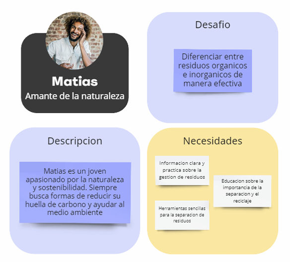
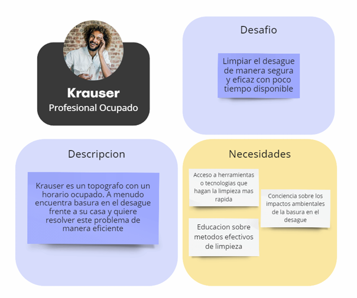
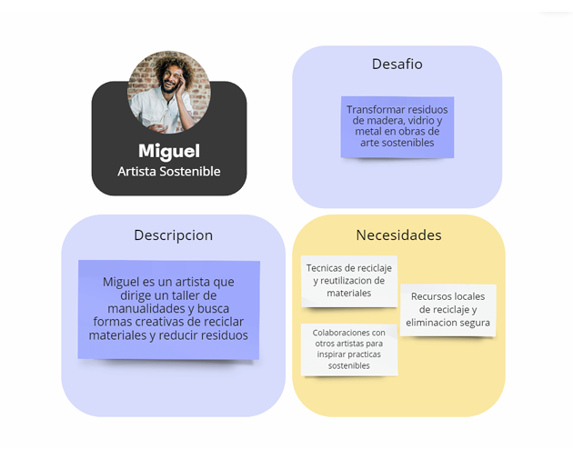
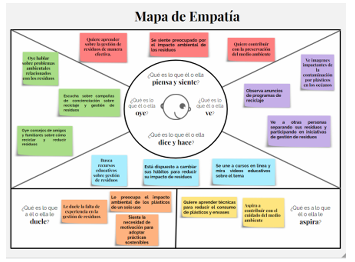
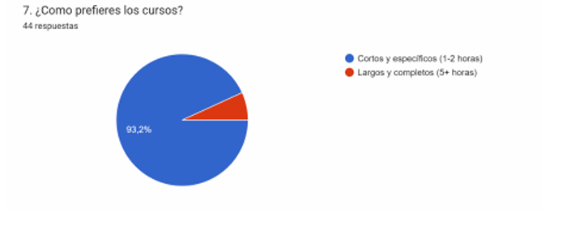
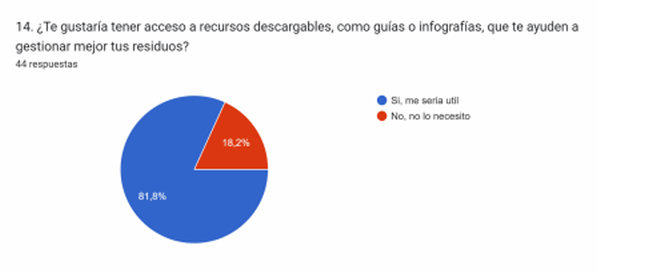
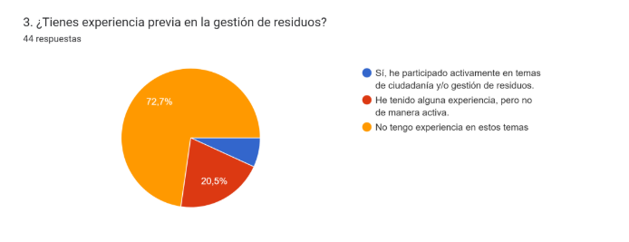
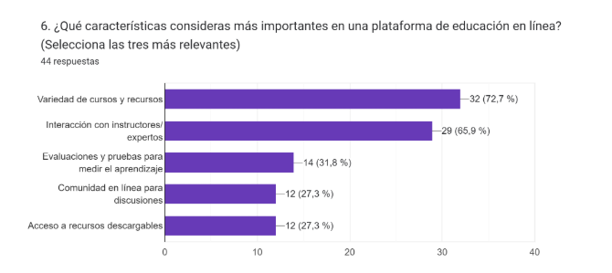

HMW: ¿Cómo podemos ayudar a Matías a diferenciar entre residuos orgánicos e inorgánicos de manera clara?
Objetivo General
La plataforma de gestión de residuos y sostenibilidad tiene como objetivo desarrollar una herramienta diseñada para ayudar a los usuarios a aprender, gestionar y tomar medidas sostenibles con respecto a la gestión de residuos.
Perfil de los Usuarios
User Stories
- Como usuario, quiero aprender a clasificar residuos orgánicos e inorgánicos para contribuir al reciclaje.
- Como usuario, deseo herramientas que me faciliten la gestión de residuos de manera sostenible.
- Como usuario, quiero recibir retroalimentación sobre mi progreso en la gestión de residuos.
Requisitos del Sistema
Requisitos Funcionales
- El sistema debe proporcionar educación y capacitación sobre técnicas de gestión de residuos.
- Ofrecer herramientas como contenedores adecuados, etiquetas y acceso a recursos locales.
- Incluir guías y tutoriales para acciones específicas como limpieza de desagües.
- Implementar un sistema de retroalimentación para evaluar el progreso del usuario.
Requisitos No Funcionales
- El sistema debe ser fácil de usar y accesible para usuarios de todas las edades.
- Todas las soluciones propuestas deben estar alineadas con principios de sostenibilidad ambiental, incluyendo la reducción de residuos y el fomento del reciclaje.
- El sistema poseerá creatividad e innovación para llamar la atención.
Historias y HMW
HMW: ¿Cómo podemos facilitar a Krauser la limpieza del desagüe frente a su casa de manera eficiente?
HMW: ¿Cómo podemos ayudar a Miguel a aprovechar al máximo los residuos generados en su taller?
Mapa de Empatía
El mapa de empatía nos permitió identificar las emociones, necesidades y preocupaciones de los usuarios al momento de interactuar con el sistema. Este enfoque ayudó a diseñar una solución más alineada con sus expectativas.

Resultados de algunas Encuestas
de 44 encuestados
Las encuestas realizadas revelaron datos clave sobre el comportamiento y las necesidades de los usuarios:
- El 93% de los encuestados está interesado videos cortos, recursos descargables entre otros
- El 81% mencionó que le gustaría tener acceso a recursos descargables.
- El 72% mencionó no tiene experiencia previa en la gestión de residuos.
- El 72% mencionó que le gustaria variedad de cursos y recursos.



